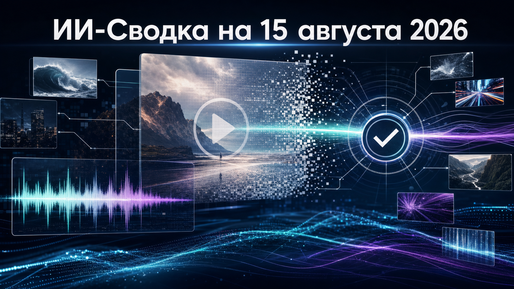

Новостей сегодня меньше, чем обычно
Главный подтверждённый сюжет выпуска касается маркировки синтетического контента в продуктах Google. Компания делает видимый водяной знак отключаемым, но заявляет о сохранении скрытых и машиночитаемых сигналов происхождения медиа.
Google объявила, что пользователи смогут отключать видимый watermark у изображений, видео и музыки, созданных ИИ в Gemini и Flow. Изменение относится к генерациям с использованием Nano Banana, Omni и Lyria; для Search поддержку обещают добавить позднее.
Как пишет TechCrunch, Google намерена сохранять невидимую маркировку SynthID и связанные с C2PA метаданные, а также открывает библиотеку Credentio для локальной проверки медиа-credentials. Это снижает визуальную заметность происхождения контента при публикации, но не отменяет техническую проверку там, где платформы и инструменты её поддерживают. Эффективность сохранённых механизмов и полный график их внедрения независимыми проверками пока не подтверждены.